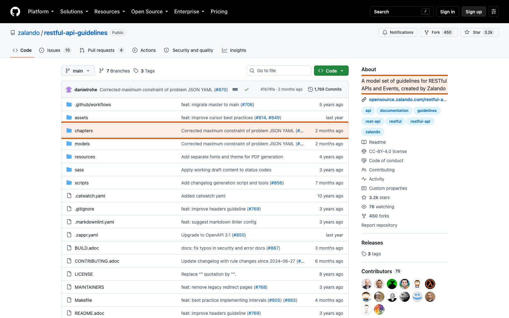
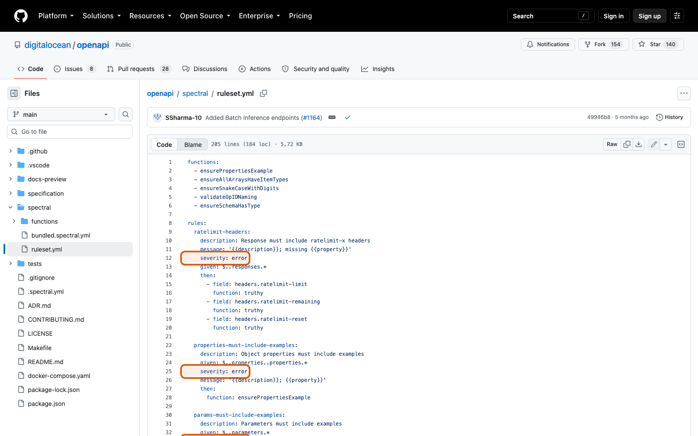

Справочник «Стандартизация HTTP API» · модуль 6 · Стандарт и его проверка
Глава 6.1
API
Style Guide
До сих пор мы разбирали отдельные правила: адреса, методы, коды, заголовки, версии. Теперь соберём их в один документ — внутренний стандарт проекта. Главное в нём не список, а два свойства: у каждого правила есть сила требования и способ проверки.
- Категория
- Стандарт
- Уровень
- Базовый
- Связанные главы
- 6.2 Линтер Spectral · 6.3 Контрактные тесты · 7.4 Стандарты компаний
- Зачем это знать
- Чтобы договорённости команды жили дольше, чем память участников
§1Зачем нужен свой стандарт
Пока сервис пишет один человек, договорённости живут у него в голове. Как только появляется второй, начинаются разночтения: у одного created_at, у другого createdAt; один возвращает 200 при создании, другой 201. Каждое такое расхождение по отдельности мелочь, а вместе они превращают API в набор разных API под одним адресом.
- решение зависит от того, кто пишет
- спор на каждом ревью заново
- клиент учит исключения наизусть
- новый участник узнаёт правила случайно
- решение уже принято
- ревью сверяется с документом
- клиент видит единообразие
- новый участник читает один файл
В учебном проекте это файл docs/API_STYLE_GUIDE.md. Он небольшой — около сотни строк — и целиком состоит из решений, которые мы разбирали в предыдущих модулях.
§2MUST, SHOULD, MAY: RFC 2119
Первое, что задаёт документ, — как читать силу требования. Слова взяты не произвольно: их значения определены отдельным стандартом, RFC 2119, и в стандартах эти слова пишут заглавными буквами именно поэтому.
Внутренний стандарт проекта. Сила требования обозначается словами из RFC 2119: MUST — обязательно, SHOULD — рекомендуется, отступление нужно обосновать, MAY — допускается.
X-Request-Id.»обязательно204.»обоснуйPOST MAY принимать Idempotency-Key.»можноРазница между MUST и SHOULD проявляется на ревью. К MUST вопрос один: выполнено или нет. К SHOULD вопрос другой: если не выполнено, то почему — и ответ записывается.
Открывая свод правил Zalando или RFC, первым делом смотрите на слово. Правило 182 про ETag — это MAY: «можно предусмотреть». Правило 153 про 429 — MUST. Одинаково выглядящие пункты списка имеют совершенно разный вес, и без этого различия свод читается неправильно.
§3Как выбрать уровень требования
Выбор уровня — самая содержательная часть написания стандарта. Ориентир простой:
| Вопрос о правиле | Ответ | Уровень |
|---|---|---|
| Нарушение ломает клиента или делает API непредсказуемым? | да | MUST |
| Нарушение делает API хуже, но есть случаи, когда оправдано? | да | SHOULD |
| Это возможность, которой можно пользоваться, а можно нет? | да | MAY |
| Нарушение вообще незаметно снаружи? | да | правилу не место в стандарте API |
Последняя строка отсекает самую частую ошибку: внутренние соглашения о коде — имена переменных, структура папок, стиль коммитов — в стандарт API не входят. Стандарт API описывает то, что видит клиент.
Соблазнительно и вредно: документ становится невыполнимым, его начинают нарушать целиком, а не по пунктам. Если MUST нарушается регулярно — это был SHOULD.
Другая крайность: тогда ни одно правило не обязательно и каждое ревью снова превращается в спор. MUST должно быть достаточно, чтобы API оставался предсказуемым.
§4Каждое правило проверяемо
Второе свойство документа важнее первого. Посмотрите на настоящие строки стандарта — в скобках указано, чем правило проверяется:
- URI MUST use nouns: /tickets, а не /getTickets (.spectral.yaml: paths-no-verbs). - Все пути MUST начинаться с мажорной версии: /api/v1/ (tests/test_contract.py). - Каждый ответ MUST содержать X-Request-Id (tests/test_http_features.py). - Свойства MUST быть в snake_case: created_at, ticket_id (json-properties-snake-case). - Создание ресурса MUST выполняться POST на коллекцию и возвращать 201 Created с заголовком Location (tests/test_tickets.py).
Каждая ссылка в скобках — это файл, который можно запустить. Правило без пометки проверяется человеком на ревью, и таких в документе заметно меньше.
operationId, media type ошибок. Глава 6.2..spectral.yamloperationId, требование токена. Глава 6.3.test_contract.py201 с Location, 412 на устаревший If-Match.test_tickets.py§5Структура документа
Разделы удобно строить по пути запроса — от адреса к телу, — а не по важности.
docs/API_STYLE_GUIDE.md
X-Request-Id, ETag, If-Match, лимиты, Idempotency-Key, CORSoperationId, теги, описания ответов, примеры/api/v1, устареваниеТакой порядок удобен читателю: проверяя своё изменение, он идёт сверху вниз ровно в том порядке, в каком формируется запрос.
§6Правило без источника не правило
У каждого правила в учебном проекте есть отдельный документ-обоснование — docs/STANDARDS.md. Там для каждого решения указан источник: раздел RFC, правило из свода компании или ссылка на документацию крупного API, с цитатой в оригинале и переводом.
## 4. Формат ошибок: Problem Details В проекте: app/problems.py, docs/ERRORS.md, страницы видов ошибок на GitHub Pages. Источник: RFC 9457, раздел 3.1.1, Standards Track. > If the type URI is a locator …, dereferencing it SHOULD provide human-readable > documentation for the problem type … Перевод: если URI в поле type является адресом … Как это делают другие: Zalando — application/problem+json; Azure — своя структура ошибки и заголовок x-ms-error-code.
Четыре части записи отвечают на четыре вопроса: где это в нашем коде, откуда правило взято, что оно означает по-русски и какие есть другие варианты. Последняя часть особенно полезна: она показывает, что решение было выбором, а не единственной возможностью.
Правило без источника обсуждается бесконечно, потому что спорить можно с автором. Правило со ссылкой на RFC обсуждать нечем: либо вы принимаете стандарт, либо записываете обоснованное отступление — и это уже другой, гораздо более короткий разговор.
§7Своды крупных компаний
Свой стандарт пишут не с нуля — смотрят, как это сделано у других, и берут подходящее.
| Свод | Чем полезен | Особенность |
|---|---|---|
| Zalando RESTful API Guidelines | Самый подробный: каждое правило пронумеровано и имеет уровень | На правило можно сослаться номером: «rule 176» |
| Microsoft API Guidelines | Отдельные своды для Azure и Microsoft Graph | Внутри одной компании решения расходятся |
| adidas API Guidelines | Компактный, читается за вечер | Хороший образец для небольшой команды |
| DigitalOcean | Правила выражены готовым набором для линтера | Стандарт и его проверка — один и тот же файл |


§8Частые ошибки
§9Проверьте себя
- Что означают MUST, SHOULD и MAY и чем отличается разговор на ревью для первых двух?
- Как выбрать уровень требования для нового правила? Приведите пример для каждого уровня.
- Почему правило «имена переменных в snake_case» не место в API Style Guide, а «свойства JSON в snake_case» — место?
- Назовите четыре способа проверки правил в учебном проекте.
- Из каких четырёх частей состоит запись в
STANDARDS.mdи зачем нужна последняя? - Почему стандарт DigitalOcean, выраженный набором правил линтера, не может разойтись с проверкой?
MUST — обязательноSHOULD — обоснуй отступлениеMAY — допускается.spectral.yaml — описаниеtest_contract.py — структураtest_tickets.py — поведениеревью — смыслгде в кодеисточникпереводварианты у другихZalandoMicrosoftadidasDigitalOceanСправочник «Стандартизация HTTP API» · модуль 6 · глава 6.1Макаров Максим Николаевич